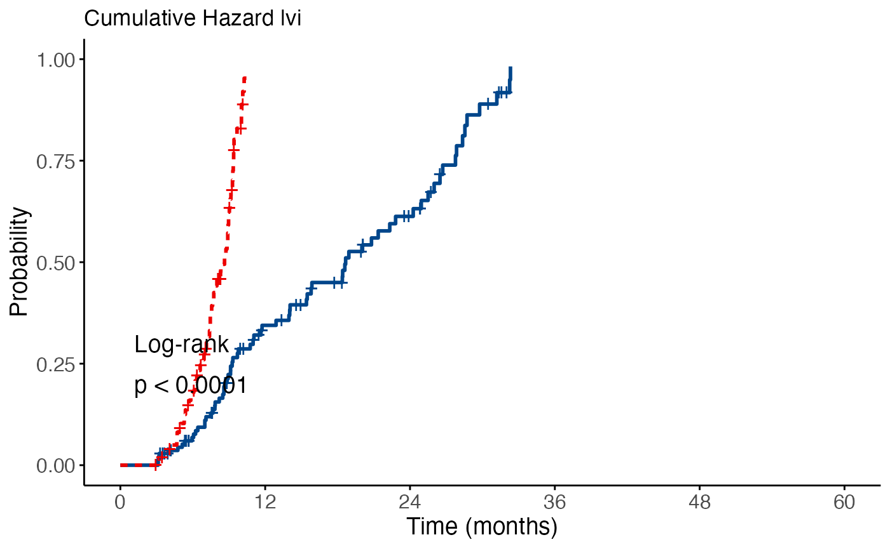

library(ClinicoPath)
#> Warning: replacing previous import 'dplyr::select' by 'jmvcore::select' when
#> loading 'ClinicoPath'
#> Warning: replacing previous import 'cutpointr::roc' by 'pROC::roc' when loading
#> 'ClinicoPath'
#> Warning: replacing previous import 'cutpointr::auc' by 'pROC::auc' when loading
#> 'ClinicoPath'
#> Warning: replacing previous import 'magrittr::extract' by 'tidyr::extract' when
#> loading 'ClinicoPath'
#> Warning: replacing previous import 'jmvcore::select' by 'dplyr::select' when
#> loading 'ClinicoPath'
#> Warning: replacing previous import 'ROCR::plot' by 'graphics::plot' when
#> loading 'ClinicoPath'
#> Warning: replacing previous import 'dplyr::select' by 'jmvcore::select' when
#> loading 'ClinicoPath'
data("histopathology")
dplyr::glimpse(histopathology)
#> Rows: 250
#> Columns: 38
#> $ ID <dbl> 1, 2, 3, 4, 5, 6, 7, 8, 9, 10, 11, 12, 13, 14, 15…
#> $ Name <chr> "Tonisia", "Daniyah", "Naviana", "Daerion", "Tamy…
#> $ Sex <chr> "Male", "Female", "Male", "Male", "Female", "Fema…
#> $ Age <dbl> 27, 36, 65, 51, 58, 53, 33, 26, 25, 68, 34, 45, 3…
#> $ Race <chr> "White", "White", "White", "White", "Black", "Whi…
#> $ PreinvasiveComponent <chr> "Present", "Absent", "Absent", "Absent", "Absent"…
#> $ LVI <chr> "Present", "Absent", "Absent", "Present", "Absent…
#> $ PNI <chr> "Absent", "Absent", "Absent", "Absent", "Absent",…
#> $ LastFollowUpDate <chr> "2019.10.22 00:00:00", "2019.06.22 00:00:00", "20…
#> $ Death <chr> "YANLIŞ", "DOĞRU", "DOĞRU", "YANLIŞ", "YANLIŞ", "…
#> $ Group <chr> "Control", "Treatment", "Control", "Treatment", "…
#> $ Grade <dbl> 2, 2, 1, 3, 2, 2, 1, 2, 3, 3, 3, 1, 1, 1, 2, 1, 2…
#> $ TStage <dbl> 4, 4, 4, 4, 1, 4, 2, 3, 4, 4, 3, 2, 2, 2, 4, 4, 2…
#> $ `Anti-X-intensity` <dbl> 3, 2, 2, 3, 3, 3, 2, 2, 1, 2, 3, 3, 3, 1, 3, 3, 3…
#> $ `Anti-Y-intensity` <dbl> 1, 1, 2, 3, 3, 2, 2, 2, 1, 3, 1, 2, 2, 2, 2, 3, 2…
#> $ LymphNodeMetastasis <chr> "Present", "Absent", "Absent", "Absent", "Absent"…
#> $ Valid <chr> "YANLIŞ", "DOĞRU", "YANLIŞ", "DOĞRU", "DOĞRU", "D…
#> $ Smoker <chr> "YANLIŞ", "YANLIŞ", "DOĞRU", "YANLIŞ", "DOĞRU", "…
#> $ Grade_Level <chr> "high", "low", "low", "high", "low", "moderate", …
#> $ SurgeryDate <chr> "2019.07.08 00:00:00", "2019.03.18 00:00:00", "20…
#> $ DeathTime <chr> "Within1Year", "Within1Year", "Within1Year", "Wit…
#> $ int <chr> "2019-07-08 UTC--2019-10-22 UTC", "2019-03-18 UTC…
#> $ OverallTime <dbl> 3.5, 3.1, 3.1, 4.9, 3.3, 9.3, 6.3, 9.0, 5.8, 9.9,…
#> $ Outcome <dbl> 0, 1, 1, 0, 0, 0, 1, 1, 1, 0, 1, 1, 1, 1, 1, 0, N…
#> $ Mortality5yr <chr> "Alive", "Dead", "Dead", "Alive", "Alive", "Alive…
#> $ `Rater 1` <dbl> 0, 1, 1, 0, 0, 0, 1, 1, 1, 0, 1, 1, 1, 1, 1, 0, N…
#> $ `Rater 2` <dbl> 0, 0, 0, 0, 0, 0, 0, 0, 0, 0, 0, 0, 0, 0, 0, 0, 0…
#> $ `Rater 3` <dbl> 1, 1, 1, 0, 1, 1, 1, 1, 1, 1, 1, 1, 1, 1, 1, 0, 1…
#> $ `Rater A` <dbl> 3, 2, 3, 3, 2, 3, 1, 1, 2, 1, 1, 3, 3, 1, 3, 2, 3…
#> $ `Rater B` <dbl> 3, 2, 3, 3, 2, 3, 1, 1, 2, 1, 1, 3, 3, 1, 3, 2, 3…
#> $ `New Test` <dbl> 0, 0, 0, 0, 0, 0, 1, 0, 0, 0, 1, 0, 0, 1, 0, 1, 1…
#> $ `Golden Standart` <dbl> 0, 0, 0, 0, 0, 0, 0, 0, 0, 0, 1, 0, 0, 1, 0, 0, 1…
#> $ MeasurementA <dbl> -1.634318251, 0.370706042, 0.015853764, -1.235844…
#> $ MeasurementB <dbl> 0.611415041, 0.554385763, 0.742388876, 0.62184265…
#> $ `Disease Status` <chr> "Ill", "Ill", "Healthy", "Ill", "Healthy", "Ill",…
#> $ Measurement1 <dbl> 0.38663133, 0.82938032, 0.15875305, 2.44735406, 0…
#> $ Measurement2 <dbl> 1.86537533, 0.54248017, 0.07008299, 2.40713373, 0…
#> $ Outcome2 <chr> "DOD", "DOOC", "AWD", "AWOD", "DOD", "DOOC", "AWD…
ClinicoPath::survival(
data = histopathology,
elapsedtime = "OverallTime",
tint = TRUE,
dxdate = SurgeryDate,
fudate = LastFollowUpDate,
explanatory = LVI,
outcome = Outcome,
outcomeLevel = NULL,
dod = NULL,
dooc = NULL,
awd = NULL,
awod = NULL,
timetypedata = "ymdhms",
sc = TRUE,
ce = TRUE,
ch = TRUE
)
#> Warning in check_dep_version(): ABI version mismatch:
#> lme4 was built with Matrix ABI version 1
#> Current Matrix ABI version is 0
#> Please re-install lme4 from source or restore original 'Matrix' package
#>
#> SURVIVAL ANALYSIS
#> When LVI is Absent, median survival is 26 [20.1 - 32.3, 95% CI] months.
#> When LVI is Present, median survival is 9.3 [8.8 - 10.6, 95% CI] months.
#> The median survival time is when 50% of subjects have experienced the event.
#> This means that 50% of subjects in this group survived longer than this time period.
#> Median Survival Table: Levels for LVI
#> ──────────────────────────────────────────────────────────────────────────────────────────────
#> Levels Records Events rmean se_rmean Median Lower Upper
#> ──────────────────────────────────────────────────────────────────────────────────────────────
#> Absent 141 89 27.23696 1.669564 26.000000 20.064516 32.25806
#> Present 105 77 14.29975 1.459055 9.290323 8.750000 10.58065
#> ──────────────────────────────────────────────────────────────────────────────────────────────
#>
#> When LVI is Present, there is 2.55 (1.85-3.52, p<0.001) times risk than when LVI is Absent.
#> For LVI, compared to the reference group (Absent), subjects in the Present group had 2.55 (1.85-3.52, p<0.001) times the risk of experiencing the event at any given time point.
#> A hazard ratio greater than 1 indicates increased risk, while less than 1 indicates decreased risk compared to the reference group.
#> Cox Table- LVI
#> ─────────────────────────────────────────────────────────────────────
#> Explanatory Levels all HR (Univariable)
#> ─────────────────────────────────────────────────────────────────────
#> LVI Absent 141 (57.3) -
#> Present 105 (42.7) 2.55 (1.85-3.52, p<0.001)
#> ─────────────────────────────────────────────────────────────────────
#>
#>
#> Model Metrics:
#> Number in dataframe = 246, Number in model = 246, Missing = 0, Number
#> of events = 166, Concordance = 0.619 (SE = 0.020), R-squared = 0.120(
#> Max possible = 0.998), Likelihood ratio test = 31.452 (df = 1, p =
#> 0.000)
#> When LVI is Absent, 12 month survival is 70.86% [63.34%-79.275%, 95% CI].
#> For the LVI is Absent group, the estimated probability of surviving beyond 12 months was 70.86% [63.34%-79.275%, 95% CI].
#> At this time point, there were 82 subjects still at risk and 37 events had occurred in this group.
#> When LVI is Absent, 36 month survival is 27.36% [19.58%-38.224%, 95% CI].
#> For the LVI is Absent group, the estimated probability of surviving beyond 36 months was 27.36% [19.58%-38.224%, 95% CI].
#> At this time point, there were 21 subjects still at risk and 41 events had occurred in this group.
#> When LVI is Absent, 60 month survival is 7.02% [2.26%-21.810%, 95% CI].
#> For the LVI is Absent group, the estimated probability of surviving beyond 60 months was 7.02% [2.26%-21.810%, 95% CI].
#> At this time point, there were 0 subjects still at risk and 11 events had occurred in this group.
#> When LVI is Present, 12 month survival is 28.21% [19.83%-40.143%, 95% CI].
#> For the LVI is Present group, the estimated probability of surviving beyond 12 months was 28.21% [19.83%-40.143%, 95% CI].
#> At this time point, there were 17 subjects still at risk and 64 events had occurred in this group.
#> When LVI is Present, 36 month survival is 9.80% [4.40%-21.834%, 95% CI].
#> For the LVI is Present group, the estimated probability of surviving beyond 36 months was 9.80% [4.40%-21.834%, 95% CI].
#> At this time point, there were 4 subjects still at risk and 10 events had occurred in this group.
#> When LVI is Present, 60 month survival is 0.00% [NA-NA, 95% CI].
#> For the LVI is Present group, the estimated probability of surviving beyond 60 months was 0.00% [NA-NA, 95% CI].
#> At this time point, there were 0 subjects still at risk and 3 events had occurred in this group.
#> 1, 3, 5 year Survival - LVI
#> ────────────────────────────────────────────────────────────────────────────────────────────────
#> Levels time Number at Risk Number of Events Survival Lower Upper
#> ────────────────────────────────────────────────────────────────────────────────────────────────
#> Absent 12 82 37 70.86229 63.34238 79.27496
#> Absent 36 21 41 27.35641 19.57883 38.22359
#> Absent 60 0 11 7.02197 2.26081 21.80986
#> Present 12 17 64 28.21385 19.82971 40.14286
#> Present 36 4 10 9.80463 4.40277 21.83414
#> Present 60 0 3 0.00000
#> ────────────────────────────────────────────────────────────────────────────────────────────────


overall_survival <-
ClinicoPath::survival(
data = histopathology,
elapsedtime = "OverallTime",
tint = TRUE,
dxdate = SurgeryDate,
fudate = LastFollowUpDate,
explanatory = LVI,
outcome = Outcome,
outcomeLevel = NULL,
dod = NULL,
dooc = NULL,
awd = NULL,
awod = NULL,
timetypedata = "ymdhms",
sc = TRUE,
ce = TRUE,
ch = TRUE
)
ls(overall_survival)
#> [1] "add" "analysis" "asDF"
#> [4] "asProtoBuf" "asString" "calculatedtime"
#> [7] "clear" "clone" "cox_ph"
#> [10] "coxSummary" "coxTable" "fromProtoBuf"
#> [13] "get" "getBoundVars" "getRefs"
#> [16] "index" "initialize" "insert"
#> [19] "isFilled" "isNotFilled" "itemNames"
#> [22] "items" "key" "medianSummary"
#> [25] "medianTable" "name" "options"
#> [28] "outcomeredefined" "pairwiseSummary" "pairwiseTable"
#> [31] "parent" "path" "personTimeSummary"
#> [34] "personTimeTable" "plot" "plot2"
#> [37] "plot3" "plot6" "plot8"
#> [40] "print" "remove" "requiresData"
#> [43] "resetVisible" "root" "saveAs"
#> [46] "setError" "setRefs" "setState"
#> [49] "setStatus" "setTitle" "setVisible"
#> [52] "state" "status" "subtitle"
#> [55] "survTable" "survTableSummary" "tCoxtext2"
#> [58] "title" "todo" "visible"
overall_survival$tCoxtext2
#>
#> Model Metrics:
#> Number in dataframe = 246, Number in model = 246, Missing = 0, Number
#> of events = 166, Concordance = 0.619 (SE = 0.020), R-squared = 0.120(
#> Max possible = 0.998), Likelihood ratio test = 31.452 (df = 1, p =
#> 0.000)
overall_survival$survTableSummary
#> When LVI is Absent, 12 month survival is 70.86% [63.34%-79.275%, 95% CI].
#> For the LVI is Absent group, the estimated probability of surviving beyond 12 months was 70.86% [63.34%-79.275%, 95% CI].
#> At this time point, there were 82 subjects still at risk and 37 events had occurred in this group.
#> When LVI is Absent, 36 month survival is 27.36% [19.58%-38.224%, 95% CI].
#> For the LVI is Absent group, the estimated probability of surviving beyond 36 months was 27.36% [19.58%-38.224%, 95% CI].
#> At this time point, there were 21 subjects still at risk and 41 events had occurred in this group.
#> When LVI is Absent, 60 month survival is 7.02% [2.26%-21.810%, 95% CI].
#> For the LVI is Absent group, the estimated probability of surviving beyond 60 months was 7.02% [2.26%-21.810%, 95% CI].
#> At this time point, there were 0 subjects still at risk and 11 events had occurred in this group.
#> When LVI is Present, 12 month survival is 28.21% [19.83%-40.143%, 95% CI].
#> For the LVI is Present group, the estimated probability of surviving beyond 12 months was 28.21% [19.83%-40.143%, 95% CI].
#> At this time point, there were 17 subjects still at risk and 64 events had occurred in this group.
#> When LVI is Present, 36 month survival is 9.80% [4.40%-21.834%, 95% CI].
#> For the LVI is Present group, the estimated probability of surviving beyond 36 months was 9.80% [4.40%-21.834%, 95% CI].
#> At this time point, there were 4 subjects still at risk and 10 events had occurred in this group.
#> When LVI is Present, 60 month survival is 0.00% [NA-NA, 95% CI].
#> For the LVI is Present group, the estimated probability of surviving beyond 60 months was 0.00% [NA-NA, 95% CI].
#> At this time point, there were 0 subjects still at risk and 3 events had occurred in this group.
overall_survival$survTable
#>
#> 1, 3, 5 year Survival - LVI
#> ────────────────────────────────────────────────────────────────────────────────────────────────
#> Levels time Number at Risk Number of Events Survival Lower Upper
#> ────────────────────────────────────────────────────────────────────────────────────────────────
#> Absent 12 82 37 70.86229 63.34238 79.27496
#> Absent 36 21 41 27.35641 19.57883 38.22359
#> Absent 60 0 11 7.02197 2.26081 21.80986
#> Present 12 17 64 28.21385 19.82971 40.14286
#> Present 36 4 10 9.80463 4.40277 21.83414
#> Present 60 0 3 0.00000
#> ────────────────────────────────────────────────────────────────────────────────────────────────
overall_survival$subtitle
overall_survival$plot3
overall_survival$plot2
overall_survival$plot
overall_survival$medianTable
#>
#> Median Survival Table: Levels for LVI
#> ──────────────────────────────────────────────────────────────────────────────────────────────
#> Levels Records Events rmean se_rmean Median Lower Upper
#> ──────────────────────────────────────────────────────────────────────────────────────────────
#> Absent 141 89 27.23696 1.669564 26.000000 20.064516 32.25806
#> Present 105 77 14.29975 1.459055 9.290323 8.750000 10.58065
#> ──────────────────────────────────────────────────────────────────────────────────────────────
overall_survival$medianSummary
#> When LVI is Absent, median survival is 26 [20.1 - 32.3, 95% CI] months.
#> When LVI is Present, median survival is 9.3 [8.8 - 10.6, 95% CI] months.
#> The median survival time is when 50% of subjects have experienced the event.
#> This means that 50% of subjects in this group survived longer than this time period.
overall_survival$coxTable
#>
#> Cox Table- LVI
#> ─────────────────────────────────────────────────────────────────────
#> Explanatory Levels all HR (Univariable)
#> ─────────────────────────────────────────────────────────────────────
#> LVI Absent 141 (57.3) -
#> Present 105 (42.7) 2.55 (1.85-3.52, p<0.001)
#> ─────────────────────────────────────────────────────────────────────
overall_survival$coxTable$asDF
#> Explanatory Levels all HR_univariable
#> 1 LVI Absent 141 (57.3) -
#> 2 <NA> Present 105 (42.7) 2.55 (1.85-3.52, p<0.001)
overall_survival$coxSummary
#> When LVI is Present, there is 2.55 (1.85-3.52, p<0.001) times risk than when LVI is Absent.
#> For LVI, compared to the reference group (Absent), subjects in the Present group had 2.55 (1.85-3.52, p<0.001) times the risk of experiencing the event at any given time point.
#> A hazard ratio greater than 1 indicates increased risk, while less than 1 indicates decreased risk compared to the reference group.
overall_survival$plot
# overall_survival$plot$saveAs("overall_survival.png")
#
# overall_survival <- png::readPNG("overall_survival.png")
#
# tiff::writeTIFF(what = overall_survival, where = "overall_survival.tiff", compression = "none")
# htmlTable::htmlTable(
# kableExtra::kable(
# overall_survival$coxTable$asDF
# ))All functions
histopathology
histopathology
jsurvival-package _PACKAGE jsurvival
jsurvival: Analysis for jsurvivalological Research
multisurvival()
Multivariable Survival Analysis
multisurvivalClass
Multivariable Survival Analysis
oddsratio()
Odds Ratio Table and Plot
oddsratioClass
Odds Ratio Table and Plot
singlearm()
Single Arm Survival
singlearmClass
Single Arm Survival
survival()
Survival Analysis
survivalClass
Survival Analysis
survivalcont()
Survival Analysis for Continuous Variable
survivalcontClass
Survival Analysis for Continuous Explanatory Variable Contents
Reference